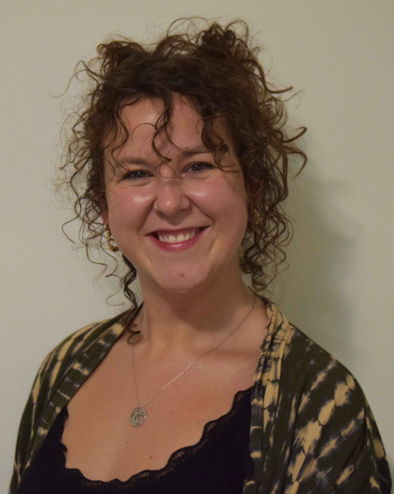
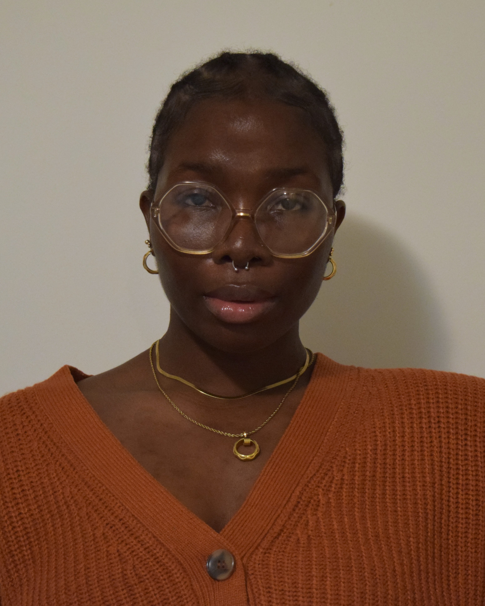
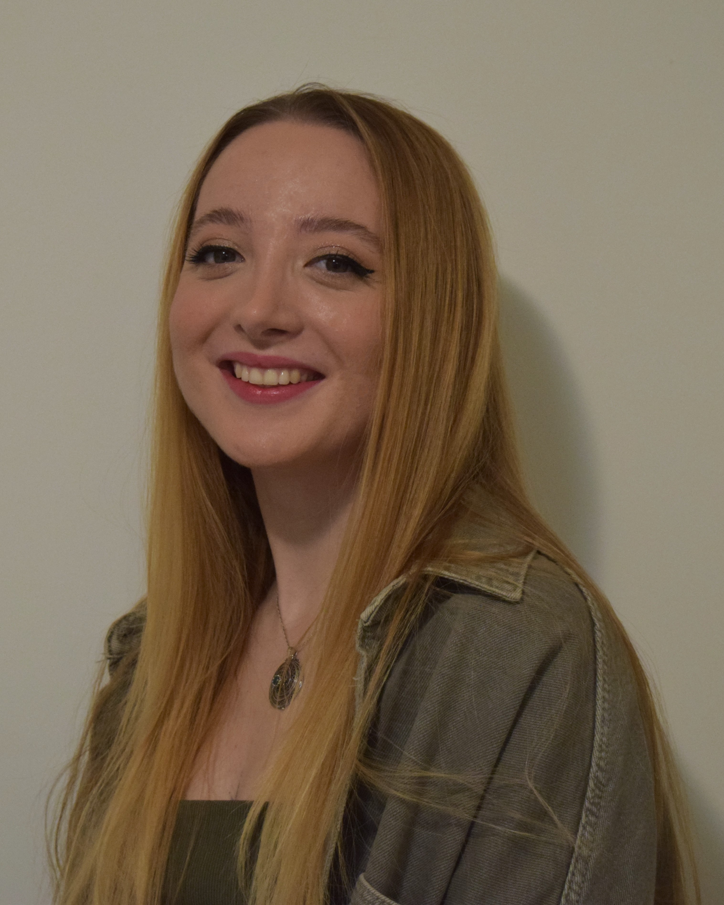
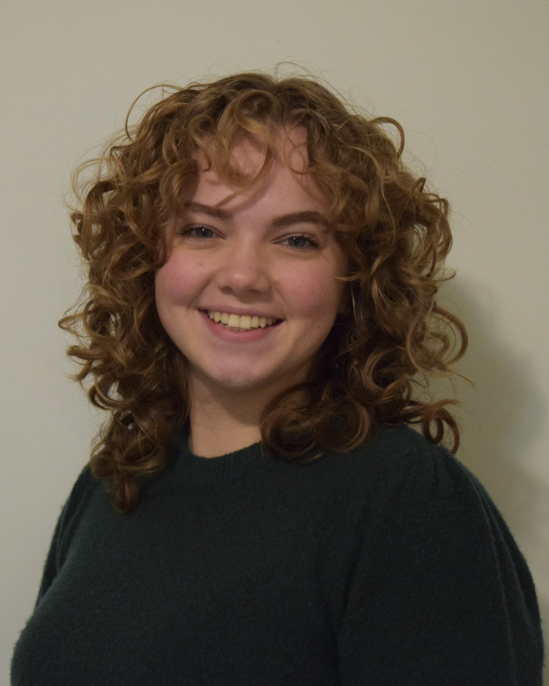
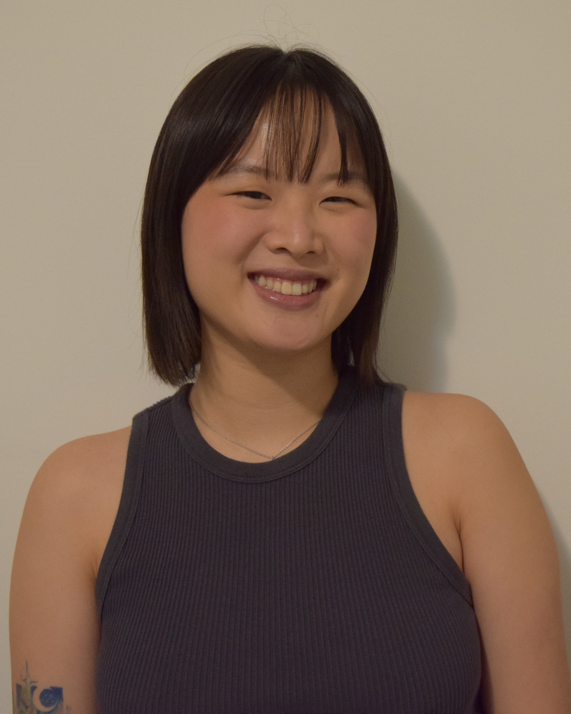
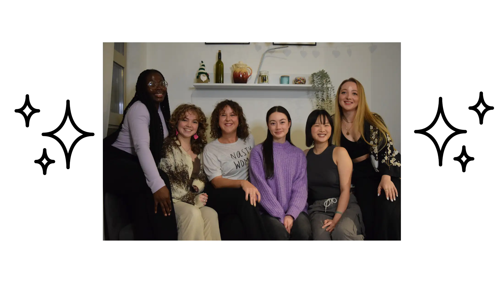

<!DOCTYPE html>
<html lang="en">
<head>
    <meta charset="UTF-8">
    <meta name="viewport" content="width=device-width, initial-scale=1.0">
    <link rel="icon" href="pictures/favicon.ico">
    <title>INTERNATIONAL WOMEN'S DAY MARCH VANCOUVER</title>
    <style>
        
        @font-face { 
            font-family: 'Sans'; src: url(fonts/bcsansfont_web/BcSansFont_Web/2023_03_14_BCSans-Light_2g.otf) format("OpenType");
        }

        @font-face {
        font-family: 'HeaderFont'; src: url(fonts/Abril_Fatface/AbrilFatface-Regular.ttf) format("TrueType");
         }

        body {
            background-color: #d4ccd9ff;
            cursor: url('cursor/woman.png') 13 19.5, move;
            margin: 0;
            padding: 0;
            font-family: 'bcsans', Arial, sans-serif;
        }

        h1, h2, h3, h4, h5, h6 {
        font-family: 'HeaderFont', Arial, sans-serif;

    }


        
        .item1 {grid-area: header;
            font-size: 1vw; 
            text-align: center;
        }
        .item2 {grid-area: left0;
            
        }
        .item3 {grid-area: center0;
            
        }
        .item4 {grid-area: right0;
           
        }
        .item5 {grid-area: left1;
        }
        .item6 {grid-area: center1;
        }
        .item7 {grid-area: right1;
        }
        .item9 {grid-area: center2;
        }
        .item8 {grid-area: footer;
        background-color: #8e7cc3ff;}
        .item10 {grid-area: pre1;
        }


        .grid-container{
            display: grid;
            grid-template-areas: 
            'header header header '
            'pre1      pre1     pre1'
            'left0  center0 right0 '
            'left1  center1  right1'
            'center2 center2 center2'
            'footer footer  footer';

            gap: 2%;
            row-gap: 0.5vw;
            background-color: #d4ccd9ff;
            padding-left: 2%;
            padding-right: 2%;
            padding-top: 1%;
        }

        

    

        img {
            width: 100%;
        }

        a {
            text-decoration: none;
            color: #321f4c;
            margin-right: 2%;
        }

        a:hover {
            text-decoration: underline;
            background-color: transparent;
            opacity: 70%;
            cursor: url('cursor/woman.png')13 19.5, move;
        }

        p a {
            margin-right: 0;
        }

        @media (max-width: 600px){

       
            .grid-container{
                grid-template-columns: 1fr;
                grid-template-areas: 
                'header'
                'pre1'
                'left0'
                'center0'
                'right0'
                'left1'
                'center1'
                'right1'
                'center2'
                'footer';

                gap: 2%;
            row-gap: 0.5vw;
            background-color: #d4ccd9ff;
            padding-left: 2%;
            padding-right: 2%;
            padding-top: 1%;
            }

            .item1{
                font-size: 2vw;
            }
            .item2 img,
                .item3 img,
                .item4 img,
                .item5 img,
                .item6 img,
                .item7 img {
                    width: 50%; /* Adjust the width of images to make them smaller */
                    height: auto;
                    display: block; /* Center the image horizontally */
                    margin: 0 auto; /* Center the image horizontally */
                    
                }
                .item1 a {
             font-size: 3vw; /* Adjust the font size of the links inside item1 on mobile */
                }

                p{
                    font-size: 3vw;
                }

            
        }
    </style>
</head>
<body>
<!--
    <div class = "grid-container">

        <div class = "item1">
            <h1 ><a href="./index">INTERNATIONAL WOMEN'S DAY MARCH<br/>VANCOUVER</a> </h1>
            <h3 style="font-size: 2vw; text-align: center; background-color: #8970c8ff;">
                <a href="./team">ABOUT US</a> 
                <a href="./events">EVENTS</a>
                <a href="./news">NEWS</a>
                <a href="./contact">CONTACT US</a>
            </h3>
                <br>
            <h3 style="font-size: 2.5vw; text-align: center; color: #321f4c; ">Vancouver Committee</h3>
        </div>

        <div class = "item2">
            
            <p> <b>Yasmin Simsek(she/her) </b> <br> 
                Chair <br>
                Yasmin is an author, actor and activist. Her full time job is currently working with the North Shore Women's Centre to provide gender based violence 
                reduction program to high schools around BC. Her creative endeavours, be it writing children's books or theatre, are all focused around representation 
                of marginalized groups & underrepresented family structures without that factor being the centre of the story. She holds an MA in Gender, Sexuality & 
                Women's Studies from SFU.
                <br>
                <br>
                What does being part of the IWD team mean to Yasmin? <br>
                I am so honoured to be chairing this committee again and to do my utmost to honour the intersections of women we represent in Vancouver. 
                I want to make sure we celebrate women's achievements, represent women from all walks of life and continue to fight the abundance of struggles women 
                face worldwide - all whilst recognizing self-identifying women's diversity.
                </p>
        </div>

        <div class = "item3">
            
            <p> <b>Megan Bobetsis(she/her) </b> <br>
                Vice-Chair <br>
                Megan completed her MA in Gender, Sexuality & Women's Studies from SFU in 2022. Since graduating, Megan worked on the project team tasked with reimagining the Gender Clinic at BC Children's Hospital, and currently works with the Harm Reduction team at the BC Centre for Disease Control. 
                <br>
                <br>
                What does being part of the IWD team mean to Megan? <br>
                I'm so grateful to return to this committee and build on the amazing work we did last year. To me, IWD is about amplifying voices and opening our hearts to the experiences of others. It's also about taking steps forward and calling on our allies and those in power to commit to real change. I'm so excited for the march and can't wait to see you all there!
                

            </p>

        </div>

        <div class = "item4">
            
            <p> <b>Oreofeoluwa Adeyonu(she/her) </b> <br>
                Administrative Director <br>
                Oreofeoluwa has a bachelor's degree in International relations and diplomacy followed by a masters degree in gender, sexuality and 
                women's studies. Oreofeoluwa currently works as the Lead Researcher and Project Coordinator - gender based violence prevention in high 
                schools where she delivers evidence based prevention programs to youths in high school and communities whilst educating adults about the 
                necessity of these programs. Oreofeoluwa's academic, career and volunteer endeavours- past and present revolve around her dedication to 
                creating spaces and adding value to minorities. 
                <br>
                <br>
                What does being part of IWD team mean to Oreofeoluwa? <br>
                As a visibly racialized migrant woman, being a member of the IWD Vancouver Committee is an avenue to represent my community. An opportunity to 
                speak at tables where we often do not get the chance to. I am very thankful and excited to be able to be a part of something that symbolizes the 
                coming together of voices that are often unheard.
                

            </p>
        </div>

        <div class = "item5">
            
            <p> <b>Gülce Özker(she/her)</b> <br>
                Operations Director<br>
                Gülce is currently completing her MA in Developmental Psychology at SFU, focusing on how the community contributes to child and 
                family well-being. She has also worked with parents and children from underrepresented immigrant groups to support their journey 
                by helping them to create their community with appropriate resources as a part of Burnaby Family Life Centre.
                <br>
                <br>
                What does being part of the IWD team mean to Gülce? <br>
                I am so happy and honoured to be a member of the IWD Vancouver Committee this year because it represents a powerful and meaningful 
                opportunity for me to be a voice for those who may not have one, to raise awareness about women's rights and gender equality, and to 
                take concrete actions to make a positive difference in women’s lives. Being part of this team is a means for me to stand up for women's rights, 
                equality, and safety, and to send a message that women should be supported, respected, and empowered.
                <br><br><br><br>
                Website developed by W. Craske. 


            </p>

        </div>

        <div class = "item6">
            
            <p> <b>Karissa Ketter(she/her)</b> <br>
                Public Relations Director<br>
                Karissa is currently completing her BA in International Studies at SFU with a focus on global politics, culture, and society. 
                She is passionate about community activism, equity and sustainability measures, and awareness for the numerous issues that women 
                and marginalized groups are facing around the world. She is also the News Editor at SFU's student newspaper, The Peak, where she 
                curates diverse stories of student activism, local events, and community achievements.
                <br>
                <br>
                What does being part of the IWD team mean to Karissa?
                I'm beyond thrilled to return to the IWD Vancouver committee. We live in a diverse and beautiful community, but diverse 
                voices are rarely adequately represented within media or our community. I'm passionate about platforming the voices of amazing 
                community activists and the tireless work they do. Hosting the IWD march is an important step in the right direction.
                

            </p>

        </div>

        <div class = "item7">
            
            <p> <b>spencer lee 李丹彤 (they/them/佢keoi5) </b> <br>
                Content Director <br>
                spencer is a first-generation Han Chinese-Canadian settler living on traditional, unceded, stolen lands of the Skwxwú7mesh (Squamish), Səl̓ílwətaʔ/Selilwitulh 
                (Tsleil-Waututh), Stó:lō, and xʷməθkwəy̓əm (Musqueam) Nations. they have been most active in their communities as a youth-centred facilitator and educator, and 
                centre racialized, queer lived experiences in the work that they do. they currently serve the community as the project coordinator for Roundtable Educational Society, 
                which is an emerging charity that seeks to explore and build a new model for charities that provides more equitable access to resources for grassroots groups working 
                to improve the lives of their communities in BC & Canada.
                <br>
                <br>
                What does being part of the IWD team mean to spencer?
                for most of this year, feelings of grief and helplessness have been heavy. my involvement means being in community to hold space for heartbreak, for healing, 
                and for imaginative futures. to me, being involved in the IWD committee is where i am mobilized, hopeful, and joyful, as i stand in solidarity with my local 
                and global community coming together for the sake of collective liberation.
                

            </p>

        </div>

        <div class = "item10">

            
            

        </div>

        <div class = "item9">
            <h3> <b>Land Acknowledgement </b> </h3>
            <p>We acknowledge that the Vancouver International Women’s Day committee is located on the Unceded Coast Salish Territories of the xʷməθkʷəy̓əm (Musqueam),
                 Səl̓ílwətaʔ/Selilwitulh (Tsleil-Waututh), Kwikwitlem (Coquitlam), Kwantlen, Katzie, Semiahmoo, and Skwxwú7mesh Úxwumixw (Squamish) Peoples. Unceded means 
                 that this land was never surrendered, relinquished, or handed over in any way. Today, most of BC remains unceded sovereign Native lands, over which neither 
                 the Canadian or BC government have the legal or moral authority to govern. We recognize that these communities are the original caretakers and stewards over
                  the lands and waters that we occupy. 
                  <br>
                 
                  <br>
                  This committee is dedicated to supporting the different strategies that Indigenous peoples are using to protect their land and their communities, and we 
                  commit to dedicating time and resources to working in solidarity. Specifically, our committee recognizes the
                  <a href = 'https://www.un.org/development/desa/indigenouspeoples/wp-content/uploads/sites/19/2018/11/UNDRIP_E_web.pdf'> United Nations Declaration on the Rights of 
                  Indigenous Peoples</a>
                  (UNDRIP). This affirms the “fundamental importance of the right to self-determination of all peoples, by virtue of which they freely determine
                   their political status and freely pursue their economic, social and cultural development.” We feel it is also important to note the
                   <a href = 'https://www2.gov.bc.ca/assets/gov/british-columbians-our-governments/indigenous-people/aboriginal-peoples-documents/calls_to_action_english2.pdf'> 
                    Truth and Reconciliation Commission of Canada: Calls to Action</a>. 
                   These 94 Calls to Action were made to “redress the legacy of residential schools and advance the process of Canadian 
                   reconciliation.” In acknowledging UNDRIP and the Calls to Action, we are committing to implementing these articles into our organization’s policy, into strategic 
                   planning, and mission within Vancouver.
                   <br>
                   <br>
                   We would further like to acknowledge the unique challenges that Indigenous women in British Columbia face. This includes the ongoing 
                   <a href = 'https://www.mmiwg-ffada.ca/'> Missing and Murdered Indigenous Women and Girls </a>
                   (MMIWG2S+) Final Report and Calls for Justice. Indigenous women in Canada face increased violence as a result of ongoing underlying social, economic, 
                   cultural, institutional, and historical causes. 
                   <br>
                   <br>
                   This committee is dedicated to uplifting the voices of Indigenous women and two-spirit folks in British Columbia. We are privileged to settle on these 
                   lands and aim to use our time here to actively create space and uplift Indigenous communities. We encourage all settlers of this land to continue the 
                   ongoing process of education on Indigenous history and contemporary challenges and championing the 94 Calls to Action. 
                   <br>
                   <br>
                   The Vancouver IWD committee members are first, second, and third-generation settlers of this land. Our ancestry includes Turkish, Danish, English,
                    Norwegian, Han-Chinese, Yoruba & Igarra, Nigerian, Greek, and German. We are now privileged and honoured to call these unceded lands home. Some of 
                    our members were born on these lands, and others have been living here since 2021.


            </p>


        </div>


        <div class = "item8">
            
            <p style = "text-align: right; font-size: small; color:#321f4c">We acknowledge that we are located on the Unceded Coast 
                Salish Territories of the xʷməθkʷəy̓əm (Musqueam), Səl̓ílwətaʔ/<br>
                Selilwitulh (Tsleil-Waututh), Kwikwitlem (Coquitlam), Kwantlen, Katzie, 
                Semiahmoo, and Skwxwú7mesh Úxwumixw (Squamish) Peoples.<br> We 
                seek to support the different strategies that Indigenous peoples are 
                using to protect their land and their communities, <br>and we commit to 
                dedicating time and resources to working in solidarity.</p>

                <a href="https://www.instagram.com/iwdmarchvan/"></a>
                <a href="https://www.facebook.com/profile.php?id=100090451010747&mibextid=LQQJ4d"> </a>
                <a href="https://linktr.ee/iwdvancouver"></a>


        </div>
          

      


              

        </div>

    -->


</body>
</html>
